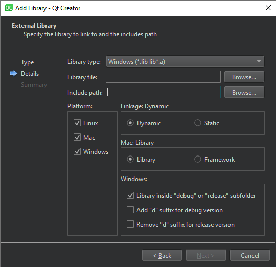

Add libraries to qmake projects
In addition to Qt libraries, you can add other libraries to your projects. The process depends on the type and location of the library:
- A system library
- Your own library
- A 3rd party library
Qt Creator supports code completion and syntax highlighting for the added libraries once your project successfully builds and links to them.
The library can be located either in the build tree of the current project or in another build tree.
To add libraries to projects that you build with qmake:
- In the Projects view, right-click the project name to open the context menu and select Add Library.

- Specify settings for the library.

The settings depend on the library type.
Library location
Because system libraries do not typically change and are often found by default, you do not need to specify the path to the library or to its includes when you add it. You can use pkg-config to query system libraries during compilation.
For your own libraries and 3rd party libraries, you need to specify the paths. Qt Creator tries to guess the include path for an external library, but you need to check it and modify it if necessary. Qt Creator automatically adds the include path for an internal library.
Target platform
For all libraries, select the target platforms for the application, library, or plugin.
Linking
Specify whether the library is statically or dynamically linked. For a statically linked internal library, Qt Creator adds dependencies as the value of the PRE_TARGETDEPS qmake variable in the project file (.pro).
Development platform
Depending on the development platform, Qt Creator might detect some options automatically. For example, on macOS, it detects the library type (Library or Framework) automatically and hides the option. However, if you develop on another platform than macOS and want to build your project for macOS, you must specify the library type.
The default convention on Windows is that the debug and release versions of a library have the same name, but are placed in different subdirectories, usually called debug and release. If the library path does not have either of these folders, you cannot select the option to place the libraries in separate folders.
Alternatively, the letter d can be added to the library name for the debug version. For example, if the release version is called example.lib, the debug version is called exampled.lib. You can specify that the letter is added for the debug version and removed for the release version. If the library name ends in d, deselect the Remove "d" suffix for release version option.
For more information about the project file settings, see qmake Manual: Declaring Other Libraries.
See also Tutorial: Adding an Internal Library to a qmake Project, Add subprojects to projects, Add libraries to CMake projects, Use project wizards, and Creating Projects.